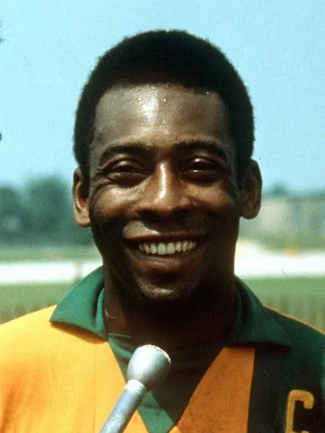
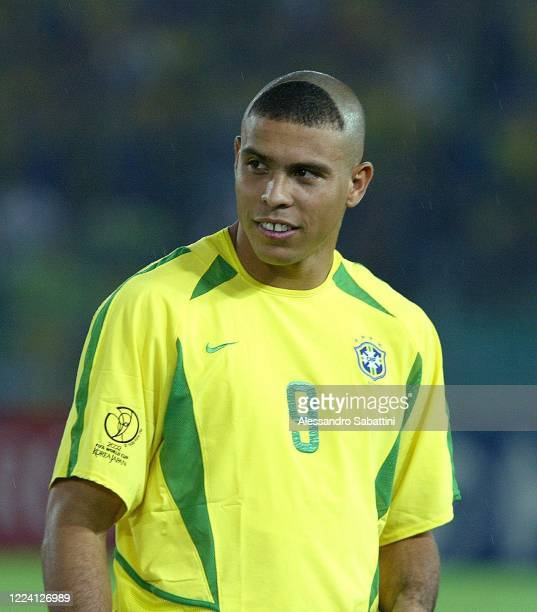

RONALDINHO
Brasil

(Nombre futbolístico de Ronaldo de Assis Moreira; Brasil, 1980) Futbolista brasileño. Ronaldinho Gaucho no es solo un jugador de fútbol, es el ídolo de millones de aficionados que ven en él la encarnación del “jogo bonito” brasileño, del fútbol hecho con arte que ilusiona a grandes y pequeños. La historia de esta estrella del balompié empieza el día 21 de marzo del año 1980, cuando nace en la localidad brasileña de Porto Alegre el pequeño Ronaldo de Assis Moreira, en el seno de una familia de origen humilde en la que se vive con entusiasmo la afición por este deporte. Y es que fue su padre Joao quien le inculcó el amor por el fútbol, igual que a su hermano mayor Roberto. Precisamente era éste quien parecía predestinado a ser un número uno con el balón, pero cuando Ronaldo era aún solo un niño demostró sus habilidades y Roberto se retiró de la práctica profesional para convertirse en el manager de una futura figura internacional: Ronaldinho.
PELÉ
Brasil
Edson Arantes do Nascimento; Três Corações, 1940 - São Paulo, 2022 Futbolista brasileño. El mejor futbolista de todos los tiempos, en opinión de muchos, fue rechazado por los principales clubes de fútbol brasileños en los comienzos de su carrera deportiva, hasta que, tras jugar en varias formaciones secundarias, en 1956 fichó por el Santos de São Paulo. Su padre había sido un jugador de fútbol mediocre que se retiró tempranamente. Mientras aprendía el oficio de dominar el balón, Pelé se ganaba la vida como limpiabotas. Pero a los once años ya se habían fijado en él, y a los quince llegó al Santos, el equipo de su vida, después de la selección nacional de Brasil. Entre 1956 y 1974, Pelé ofreció en el Santos verdaderos recitales futbolísticos. La Perla Negra, uno de los apelativos que recibió, era un jugador de corpulencia media que conjugaba una gran habilidad técnica, un poderoso disparo con ambas piernas y una inusitada capacidad de anticipación.
RONALDO
Brasil
Ronaldo Luiz Nazario de Lima; Rio de Janeiro, 1976 Futbolista brasileño. Dotado de unas cualidades excepcionales, con el balón en sus botas era imprevisible, insospechado, mágico, demoledor y certero. Sus 1,83 m de estatura y sus 75 kg de peso lo convirtieron tempranamente en una gran estrella y en el "crack" del fútbol mundial de su generación, relevando a las grandes figuras de los años ochenta. De familia humilde, la madre de Ronaldo, divorciada, trabajaba catorce horas al día en pizzerías o supermercados para sacar adelante a sus tres hijos. Vivían en el suburbio de Benito Ribeiro, olvidado y lejano como otros tantos arrabales de la zona norte de Río de Janeiro, cuyos habitantes desconocen la paradisíaca zona sur de la ciudad, con sus playas, sus lujosos coches y sus ricas gentes. Ronaldo tampoco conocía esa parte de su propia ciudad, pero no sabía que pronto le llegaría la oportunidad de, incluso, vivir en ella.